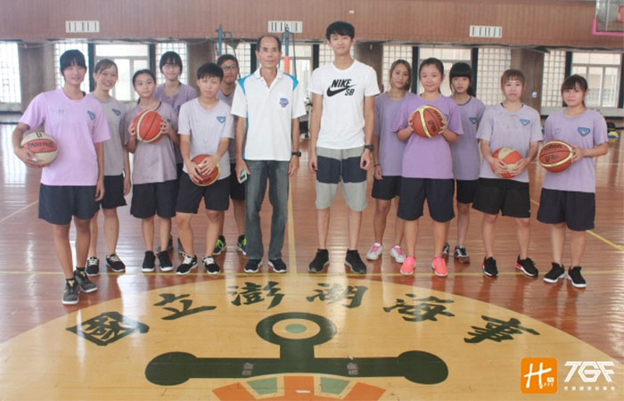

貼文時間：2017/09/18

位於澎湖縣馬公市，為澎湖縣境內唯一所高級職業學校。澎水女籃重建於今年八月，由澎水校友鐘仁宏教練帶動，集合校內喜愛運動喜愛籃球的女學生，重建停擺數十年之久的澎水女籃籃球隊…
鐘仁宏教練表示，澎水為縣內唯二所高中職，在招生上並無馬公高中來得順利，而在這群學生中，要找到對籃球有興趣的女孩子更是難上加難，加上鮮少有具底子的球員入學，球隊一度停擺數十年之久。建於校內女性運動較為弱勢及對於籃球的熱愛下，鐘教練發起了重建革命，集合喜愛籃球的女學生，組成第二代澎水女籃。
在球隊訓練上，鐘教練表示，由於球隊建立初期，隊員對於訓練是較為生疏的，因此著重在培養球員的興趣，接著體能，而後球感及團隊精神；溝通上盡量「簡化名詞」，使其了解意思後再做訓練。
由於練習大部分是乏味的，也因此鐘教練將動態及靜態的訓練合而為一，靜態指的是對於運動防護的意識，而動態為從暖身到收操的過程，並將單向練習導向綜合練習，反覆提醒觀念，在初期運用制式化訓練使球員更快融入。
澎水女籃曾一度停擺，今年度在鐘教練努力推動下而成立，相對於立即打出可觀的成績，鐘教練更希望校方給予更多資源的投入，重視學生運動的發展，給孩子做夢的機會，使澎水女籃得以永續經營。
祝福澎水女籃的隊員，也期望未來能打出亮眼成績，讓大家看見妳們奮鬥的故事。